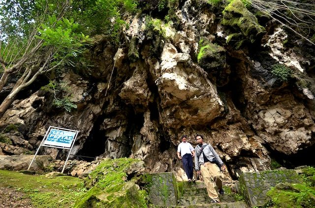
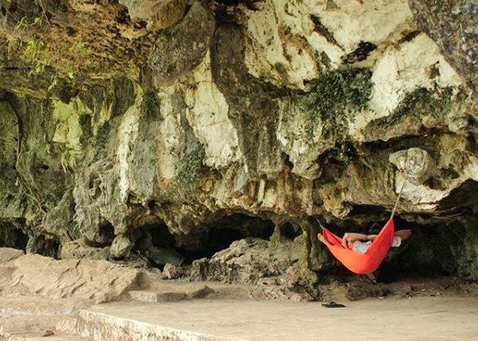
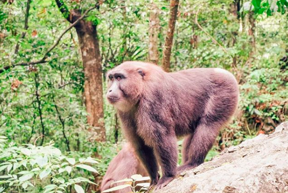
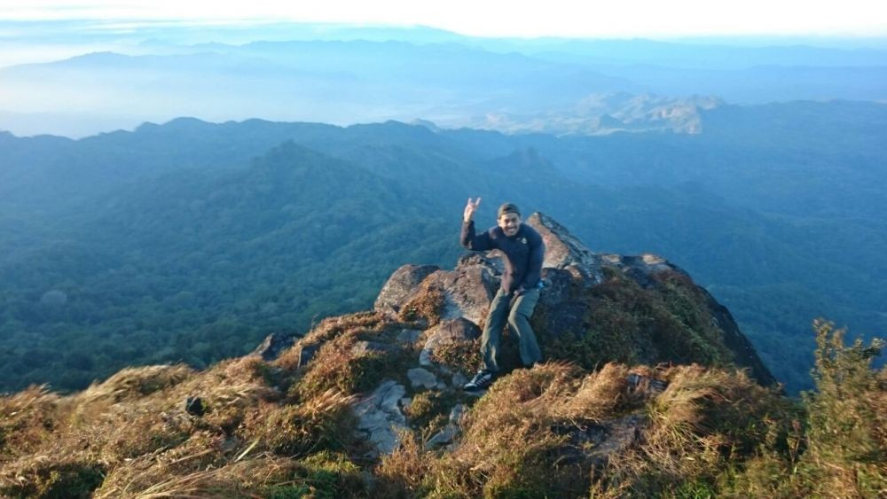

7 Objek Wisata di Taman Nasional Bantimurung Bulusaraung
1. Kawasan Wisata Bantimurung
Lokasi ini terletak di kelurahan Kalabbirang, kecamatan Bantimurung, kabupaten Maros. Menyodorkan beragam atraksi wisata menarik, seperti air terjun yang mengalir deras, aliran sungai dengan tepian berbatu diapit tebing terjal, danau, serta hawa sejuk yang menenangkan.
Bantimurung dikenal luas sebagai “The Kingdom of Butterfly”, seperti julukan yang diberikan oleh Alfred Russel Wallace (1857) karena keanekaragaman dan kelimpahan kupu-kupunya. Di wilayah ini terdapat juga lokasi penangkaran Taman Kupu-kupu yang sekaligus jadi wahana pendidikan konservasi bagi masyarakat umum.
Hulu sungai di Kawasan Wisata Bantimurung berhulu di danau Kassi Kebo yang dikelilingi tebing terjal. Di dekat danau terdapat gua batu yang meyajikan juntaian stalagtit dan tonjolan stalagmit serta keindahan ornamen gua lainnya.

2. Kawasan Prasejarah Leang-leang
Lokasi ini menawarkan wisata sejarah budaya peradaban manusia purba. Kamu bisa menelusuri tapak kehidupan manusia zaman prasejarah di sini. Terdapat lukisan telapak tangan manusia dan babi rusa yang terpampang di dinding-dinding gua serta beragam artefak di daerah ini.
Kawasan prasejarah ini juga menawarkan pemandangan menawan. Gugusan tebing batu dengan bentuk khas menjulang, membentuk panorama khas dinding karst. Jaraknya sekitar tiga kilometer dari Taman Wisata Bantimurung.

3. Kawasan Wisata Pattunuang
Jika kamu menyukai aktivitas petualang yang menantang, ini tempat yang cocok. Ada banyak pilihan yang bisa dilakukan di sini, seperti panjat tebing di dinding karst yang menjulang terjal, susur gua-gua vertikal maupun horizontal, atau susur sungai berbatu dan berair jernih. Bisa juga berkemah menikmati kehidupan alam bebas, menjelajah jalur di dalam hutan, atau mendaki di perbukitan karst.
Kawasan Pattunuang juga menyuguhkan beraneka jenis tumbuhan dan satwa liar yang berkeliaran di habitat aslinya. Seperti primata langka Tarsius Fuscus, soa-soa, dan puluhan jenis burung.
Di lokasi terpisah, ada pula legenda “Biseang Labboro” atau perahu terbalik yang membatu di tepian sungai Pattunuang. Pattunuang terletak di desa Samangki, Kecamatan Simbang, Maros.

4. Kawasan Gua Vertikal Leang Puteh
Masih di Desa Labuaja, merupakan lokasi petualang paling menantang di TN Bantimurung Bulusaraung. Gua vertikal menganga lebar dan dalam akan memacu adrenalin petualang. Dengan lebar 50-80 meter dan kedalaman sekitar 273 meter, Leang Puteh merupakan gua dengan kategori single pitch terdalam di Indonesia.
Pada bagian dasar, gua ini menyambung dengan Gua Dinosaurus yang terletak tak jauh dari mulut Gua Leang Puteh. Untuk menyusuri lokasi ini, butuh keterampilan dan keahlian khusus dan peralatan standar.

5.Kawasan Pengamatan Satwa Karaenta
Karaenta, di Desa Labuaja, Kecamatan Cenrana, kabupaten Maros, disebut sebagai laboratorium alam yang menawarkan beragam ilmu pengetahuan dan pengalaman yang menarik. Itu karena kekayaan jenis flora dan fauna serta keunikan pemandangan alamnya yang menarik dieksplorasi.
Di Karaenta terdapat kelompk primata Macaca Maura. Dengan keahlian khusus petugas, kelompok kera hitam itu dapat berkumpul dan menjadi atraksi satwa di habitat alaminya. Terdapat pula gugusan Eboni, atau kayu hitam yang merupakan jenis kayu langka dan bernilai tinggi.

6.Kawasan Wisata Pegunungan Bulusaraung
Daerah ini terletak di Desa Tompobulu, kecamatan Balocci, kabupaten Pangkep. Desa wisata ini menawarkan suasana pedesaan yang asri, berhawa sejuk, lingkungan terawat, serta budaya masyarakat yang ramah.
Di daerah ini, beragam upacara dan kebiasaan tradisional masih sering dilaksanakan. Kamu bisa menginap di rumah-rumah warga yang juga difungsikan sebagai homestay.
Jika ingin lebih menantang, lanjutkan perjalanan ke puncak Gunung Bulusaraung setinggi 1.353 meter di atas permukaan laut. Jalur pendakiannya membentang sekitar dua kilometer dengan sembilan pos pendakian. Jika beruntung, di sepanjang jalur dapat dijumpai musang, tarsius, serta berbagai jenis burung dan kupu-kupu.

7. Kawasan Permandian Alam Leang Lonrong
Daya tari utama objek wisata di Desa Panaikang, Kecamatan Minasatene, Kabupaten Pangkep adalah aliran air sungai yang mengalir dari gua Leang Lonrong. Gua ini berada di bawah tebing karst, dengan sungai yang mengalir sepanjang tahun.
Selain cocok jadi lokasi permandian, kekayaan flora dan fauna di sekitarnya juga cukup menarik dinikmati. Jelang senja, biasanya sejumlah tarsius berkeliaran di celah bebatuan karst.

source